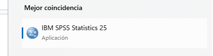
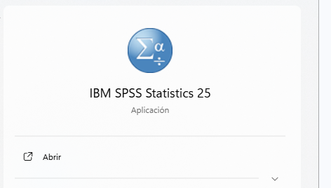
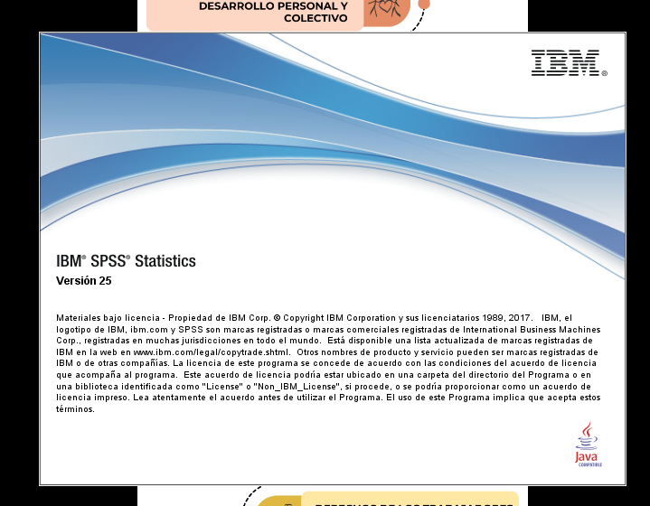
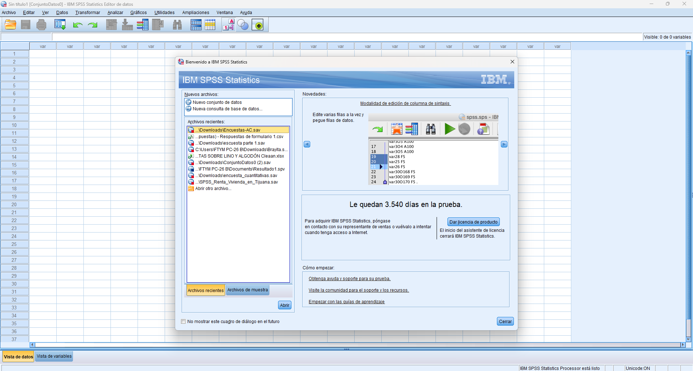
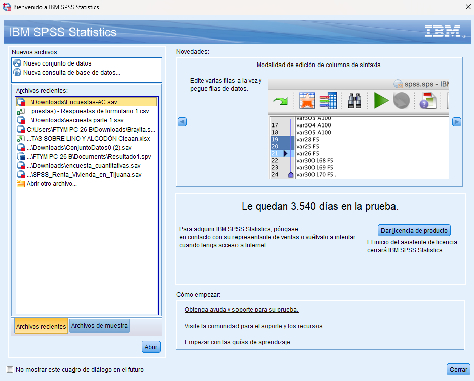
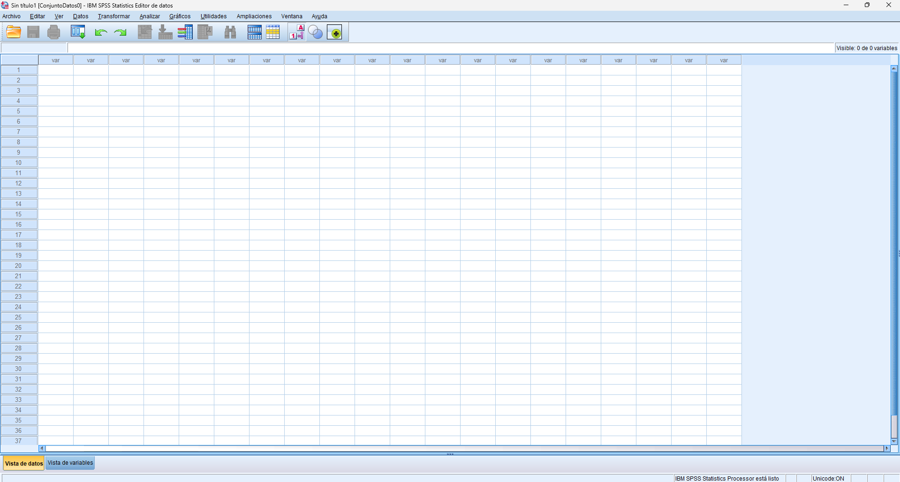
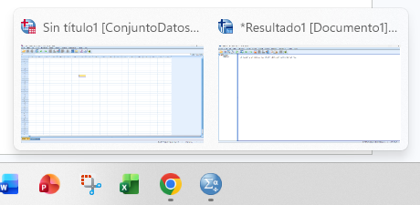
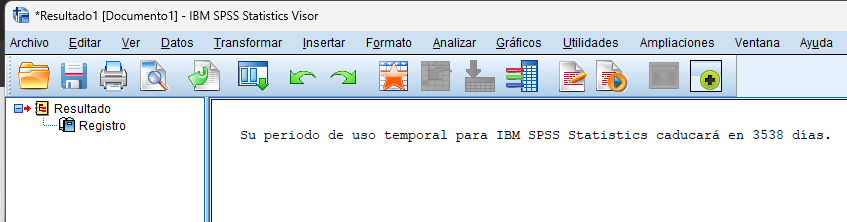

SPSS (siglas de Statistical Package for the Social Sciences) es, en palabras simples, una supercalculadora inteligente diseñada para organizar y entender grandes cantidades de información. Es una de las herramientas más potentes y utilizadas en todo el mundo por profesionales de la psicología, sociología y marketing para realizar investigaciones de mercado y estudios sociales.
Imagina que haces una encuesta a 500 personas. Leer respuesta por respuesta sería imposible. SPSS te permite tomar todos esos datos sueltos y transformarlos en conocimiento. Con un par de clics, el programa te dirá promedios, creará gráficos y te ayudará a descubrir patrones que a simple vista no verías, facilitando así la toma de decisiones.
Aunque parece un programa complejo, su mayor ventaja es su facilidad de uso. No necesitas ser un programador ni un experto en matemáticas avanzadas; su interfaz es muy intuitiva y parecida a otros programas que ya conoces, como Excel. El SPSS es tu mejor aliado para convertir números en respuestas de forma rápida, eficiente y profesional.
1. Dirígete a la barra de búsqueda de tu ordenador y escribe “spss”.
2. Se va a desplegar un recuadro en la parte superior de la barra de búsqueda en dónde va a aparecer la aplicación.
a. NOTA: En dado caso que no aparezca quiere decir que el ordenador no cuenta con la aplicación.
3. Haz clic en el icono o en el botón Abrir que aparece en el panel derecho.


4. Al abrir, verás una ventana de información sobre la versión y la licencia.
5. Una vez cargado, aparecerá automáticamente una ventana llamada "Bienvenida". Esta ventana es muy útil porque te muestra una lista de los archivos utilizados recientemente, permitiéndote retomar tu trabajo con un solo clic.
6. Para retomar un trabajo: Selecciónalo en la lista izquierda (se resaltará en amarillo) y pulsa el botón Abrir.
7. Para un trabajo nuevo haz clic en el botón Cerrar o la X de esa ventana.



8. SPSS trabaja principalmente con dos ventanas: Una es la vista de datos.
a. Es la ventana principal donde se ingresan y visualizan los datos. Funciona de manera similar a Excel.
b. Las columnas representan variables. Ejemplo: edad, sexo, ingreso.
c. Las filas representan casos o registros. Ejemplo: cada persona encuestada.
9. Otra de las ventanas es el visor de resultados.
10. Para poder visualizar esta ventana, localiza en la barra de tareas el icono de SPSS.
11. Presiona el icono de SPSS y selecciona la pestaña que dice “Resultado”.
a. Es la ventana donde se muestran los resultados de los análisis.
b. Aquí aparecen tablas, gráficos y estadísticas.
c. Los resultados se organizan en forma de lista en el lado izquierdo.
d. Puedes copiar los resultados que aparecen del lado derecho y pegarlos en programas como Word o Excel.


